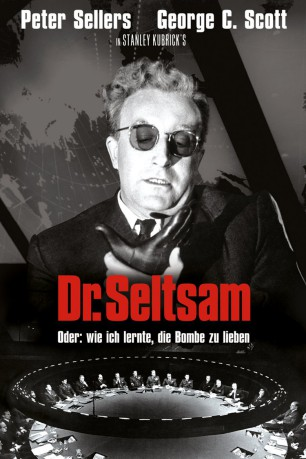

#5013 Dr. Seltsam, oder wie ich lernte, die Bombe zu lieben
Alternativ: Dr. Strangelove or: How I Learned to Stop Worrying and Love the Bomb
Auszeichnungen: für 4 Oscars nominiert 4 BAFTA-Awards gewonnen
 
 IMDB-Wertung: 8.5 / 10
IMDB-Wertung: 8.5 / 10  IMDB-TOP-Platzierung: 59
IMDB-TOP-Platzierung: 59  Metascore: 0
Metascore: 0 
Ein geisteskranker amerikanischer General, Jack D. Ripper, fühlt sich durch die kommunistische Weltverschwörung mehr und mehr bedroht. Eines Tages dreht er völlig durch. Er setzt die amerikanische Atombombenflotte Richtung Sowjetunion in Marsch. Weil der General das Geheimnis des Rückruf-Codes schließlich mit ins Grab nimmt, ist der amerikanische Präsident Muffley gezwungen, dem Sowjetpremier am Roten Telefon alle Einzelheiten über die anschwebenden Todesbomber zu verraten. Die rote Abwehr kann alle Bomber abschießen – bis auf einen!
Jahr: 1964
Dauer: 94 Minuten
FSK: 12
Land: USA Studio: ColumbiaTonspuren: DTS - ,
Untertitel:
Auflösung: 1080p (1920x1080) Größe: 9216 MB
Genre: Komödie
Regisseur:  Stanley Kubrick
Stanley Kubrick
Drehbuch: Damiano Damiani
Soundtrack:
Darsteller:
 Peter Sellers als Group Capt. Lionel Mandrake / President Merkin Muffley / Dr. Strangelove
Peter Sellers als Group Capt. Lionel Mandrake / President Merkin Muffley / Dr. Strangelove George C. Scott als Gen. 'Buck' Turgidson
George C. Scott als Gen. 'Buck' Turgidson Sterling Hayden als Brig. Gen. Jack D. Ripper
Sterling Hayden als Brig. Gen. Jack D. Ripper Keenan Wynn als Col. 'Bat' Guano
Keenan Wynn als Col. 'Bat' Guano Slim Pickens als Maj. 'King' Kong
Slim Pickens als Maj. 'King' Kong- Peter Bull als Russian Ambassador Alexi de Sadesky
 James Earl Jones als Lt. Lothar Zogg
James Earl Jones als Lt. Lothar Zogg- Tracy Reed als Miss Scott
 Shane Rimmer als Capt. 'Ace' Owens
Shane Rimmer als Capt. 'Ace' Owens- Jack Creley als Mr. Staines
- Frank Berry als Lt. Dietrich
- Robert O'Neil als Adm. Randolph
 Glenn Beck als Lt. Kivel
Glenn Beck als Lt. Kivel- Roy Stephens als Frank
 Hal Galili als Burpelson AFB Defense Team Member
Hal Galili als Burpelson AFB Defense Team Member- Paul Tamarin als Lt. Goldberg
- Laurence Herder als Burpelson AFB Defense Team Member
- Gordon Tanner als Gen. Faceman
- John McCarthy als Burpelson AFB Defense Team Member
 Victor Harrington als War Room Aide , uncredited
Victor Harrington als War Room Aide , uncredited- Peter Roy als War Room Aid , uncredited
Datei: X:\1964\Dr. Seltsam, oder wie ich lernte, die Bombe zu lieben (1964, FSK12, 1920x1080).mkv seit 19.12.2016
Festplatte: HD 1900-1970
 Es gibt insgesamt 22 Filme in der Gruppe '1964'
Es gibt insgesamt 22 Filme in der Gruppe '1964'